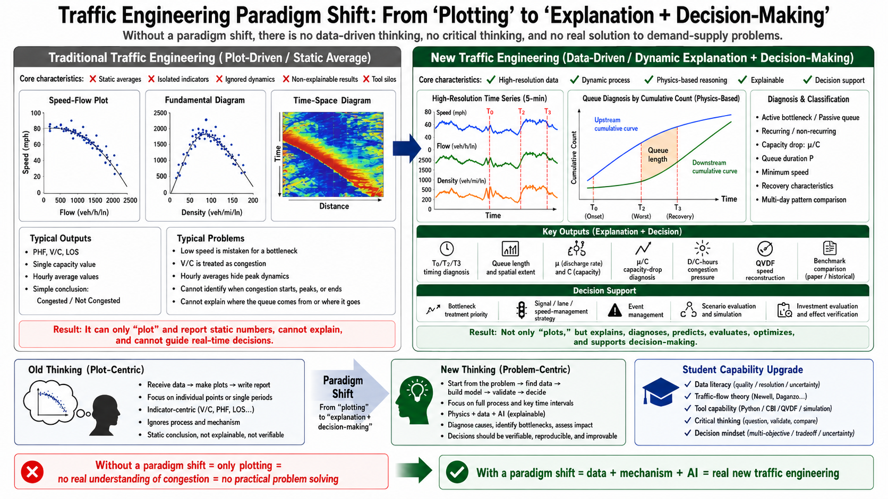

The evidence, not the promise
Every number below regenerates with python -m cbi_pipeline.repro_gates. These are internal reproduction gates — checks that this repo reproduces published and reference results — not external peer review.
25/25reproduction gates PASS
5published-work reproductions
(Tables 5/6/7 exact)
(Tables 5/6/7 exact)
12engines registered
(one contract)
(one contract)
7corridors diagnosed
+ dashboards
+ dashboards
2arenas — engines compete
per episode
per episode
6contracts, machine-checked
Get the tool, run the first diagnosis in five minutes
📦 pip package — no data files needed to start
pip install cbi-plus from cbi_pipeline import api df = api.simulate_corridor(days=5) # planted AM bottleneck out = api.diagnose(df) # QC → episodes → FD → QVDF → ranking out["ranking"].head() # who deserves the money, and why
Console tools ship with it:
cbi-corridor · cbi-gates ·
cbi-repro · cbi-discover — see the
package guide. Verified in a clean venv
against NumPy 2.4 / pandas 3.0 on five dataset families.📓 Executed teaching notebooks — read them on GitHub, no install
- Getting started — simulate, diagnose, read a ranking (no data)
- Queue anatomy — T0/T2/T3, duration P, discharge rate μ
- Fundamental diagram — capacity is a fit, not a lane tag
- QVDF on real I-10 — calibrated power laws in D/C reproduce the day
- CBI ranking on IEEE v4 — the investment argument
Every notebook runs on simulated or in-repo data and is re-executed before each release — the outputs you see are real. Open
.ipynb files in Jupyter or VS Code (a plain browser shows raw JSON) — first time? see the beginner setup.Corridor dashboard — where the platform has already been
Each card links to the full reproduction page with data, figures, and gates.
I-10 E · Los Angeles
Caltrans PeMS, Mar 2018. The QVDF paper reproduced end-to-end —
Figs 8–17 reproduced; Tables 5/6/7 exact, Table 8 within tolerance.
I-405 · corridor law
4-month summary. Case Study 2, Figs 19–23; duration fit R² = 0.977 (single-corridor, in-sample).
I-210 E · engine arenas
TrafficFlowBench PeMS-LA. 450 episodes; trapezoid wins the queue-shape
tournament 301/450; AI arena on masked blocks.
AZ I-17 / I-10 · INRIX
Speed-only TMC path with inverse-S3 volume synthesis; legacy-vs-modern
CBI agreement r = 0.709 across tool generations. (INRIX/RITIS data used as a
public benchmark reference — no partnership or endorsement implied.)
IEEE v4 · I-405 N/S + I-5 N/S
Competition release samples (km/h + is_observed mask handled).
Notebook 05 ranks I-405N's bottlenecks in one call.
SIM-1E · built-in simulator
The corridor that ships inside the package: planted bottleneck,
backward wave, capacity drop — your sandbox before real data.
Enter through any door
The Introduction
Who we train, what the old teaching misses, the LWR→Newell→Daganzo foundation, the mission.
Then why V/C is not congestion and the
two-dialect glossary.
Benchmark reproductions
The QVDF paper (both case studies, Tables 5/6/7 exact), the FD 16-model suite, PAQ corridor,
legacy CBI Arizona — each with complete datasets in-repo and keyed reference statistics.
Engine comparison
Queue-shape tournament (trapezoid 301/450 on I-210E) and the AI arena on masked-block state
reconstruction — masking geometry decides winners, honestly reported.
Flow-Through-Tensor lab
One corridor-week as a tensor: bottleneck fingerprints by linear algebra, price-of-rank,
OD-free conservation residuals — the AI↔physics bridge (math).
The AMS framework
Scheme-driven, engine-agnostic, quality-gated — TransModeler, SUMO, DTALite, DLSIM, Aimsun,
VISSIM all welcome through the same contracts (working scheme file).
Teaching workbooks & audits
Every pipeline stage by hand in Excel; simulated-student read-through reviews keep the
front door honest (latest audit).
Your first day
0 · Health check
repro_gates verifies every benchmark~5 s1 · ReadGlossary → theory foundations → stage chain30 min
2 · By handone sensor, one day: find T0/T2/T3 in Excel20 min
3 · Hello worldreproduce the QVDF paper exactly, in-repo data~2 min
4 · Real corridorfull pipeline + dashboard on I-10~2 min
5 · Diagnoseactive vs passive, μ/C, ranking — and defend itthe career
The engine is replaceable; the scheme, contracts, gates,
and reproducible process are the foundation.
regional model → subarea → dynamic assignment → trajectories →
CBI diagnosis (this platform) → policy evaluation → visualization & review